MA$HA 4RNBAY
TYPO
main
prjcts
graphics
typo
zines and mags
enjoy
visual
photo
video
web
publications
exhibitions
for sale
blogs
tumblr food blog
yt vlogs, streams and more
instagram
<< BACK
AI tool generation fonts | ULTRAFLEX | 2024
My font project was born from the idea of combining traditional typefaces from a school letterpress workshop with modern AI technologies. I developed a specialized AI tool that makes it possible to create and upload a database—in this case, a collection of letterpress font scans (though it could be any scanned set of letters)—and generate new font variations or create entirely new fonts based on that database. This tool includes a series of scripts that handle database generation and sorting, the creation of models (which can be updated as the database grows), and the ability to create variations or unique combinations on request. For now, the font-mixing function remains in the pipeline for further development, since it requires significant computing resources.
The result is the font shown here in the catalog. Thanks to the generative capabilities of the tool, the font displays chaotic yet familiar features that recall the original typeface. Some letters appear out of place, creating a sense of disorder.
So far, I have only used the variability functions, which produced interesting results. As part of the project demonstration, three different sets of glyphs were created, each distinct but united by the same foundation taken from a single typeface (listed from top to bottom):
1) The first set is the original traced font.
2) The second set already appears quite distant from the original, but is actually the closest copy. It retains its recognizable structure and legibility.
3) The third set shows noticeable changes, presenting more experimental forms.
4) The fourth set is the most chaotic and partially unreadable (it has a really stark AI style). It was the hardest to sort because many letters no longer correspond to what they originally were, so you have to really think about which letter this “mess” resembles.
This font is best suited for short phrases and headlines, thanks to its decorative, not-so-legible style. I also think it can serve as a basis for creating several standalone fonts. It includes several sets of letters, providing flexibility in creative design, and individual glyphs can be used on their own for even greater variety.
I believe the tool used to create this font could definitely be useful for finding new forms in type design, although it still requires manual refinement. Potentially, this project could grow into an open-source initiative, where users can contribute their own data to improve the tool. Integration with Stable Diffusion makes it possible to automate the generation of new font styles and variations. This project can make a significant contribution to the design community and, as shown here, help develop the cultural typographic heritage of letterpress workshops by offering innovative tools for creating and customizing fonts.
Ultimately, the process led to the creation of a variable font that conveys an impression of planned chaos, while paying homage to the original typefaces. This project challenges traditional norms of typography, offering new ways to interact with text. LOVE YOU ALL! IF YOU LIKE OUTCOME OR NOT! I appreciate everyone! KISSES!!

Scipted font | Squiggles | 2024
The results reflect the idea of the creative evolution of typeface. Starting with “aimless curve pulling”, creating abstract letterforms out of visible “nothing”, the idea gained the potential to create more meaningful letterforms.
My typeface resembles squiggles, originally drawn with no apparent purpose, yet it is possible to recognize individual letters as the basis for letterforms.
I wanted to create a font that would give the same impression as the input data taken as a basis. I was also interested in making a script font and a similar technique for creating letterforms helped me with identifying the connections. The end result is a sketch font that shows the meaning of connections through the chaos of aimless drawing in an overlay and development through the creation of direct connections.
I am interested in further developing this idea of different types of connections in a typeface to create a cohesive and unique piece of work.
This experience has shown me that typeface design is not just about embodying visual images, but about exploring and making sense of the dynamic principles of typography.
“A creative ode to chance, turning chaos into letters and uniting the abstract with the meaningful.”

Safařik cyrillic font digitalisation | CYRILLIC SAFAŘICK | 2023
Hot sexy mashaXanya a bit typeface Safařik og font digitalisation torture for 2 semesters yes good but too much for first finished font be ever done too much afford but worth it looking back now

<< BACK
outgoing links
links inside website (menu)
IG @4rnbay
YT @4rnbay
GitHub @yunglordsimens